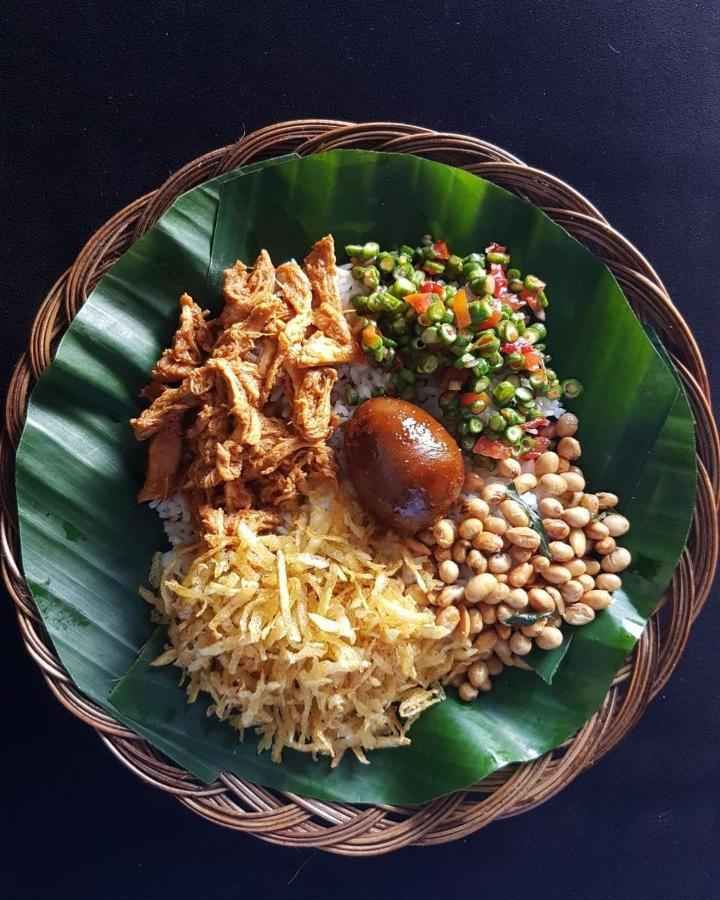

Nasi Balap Kahas Lombok

Sayur ares adalah sayuran khas Lombok yang menggunakan bahan dasar bernama ares. Ares sendiri merujuk pada pelepah pisang atau gedebok pisang yang masih muda. Ares yang sudah dipilih kemudian diolah bersama kuah yang terbuat dari santan.
Resep Nasi Balap:
# Bahan-bahan Yang Diperlukan:
- 300 g kentang
- 1 sdt garam
- Minyak goreng
- Nasi putih hangat
- 200 g kacang tanah goreng
# Bahan Untuk Membuat Bumbu Halus:
- 30-50 g cabai kering, rendam air hingga lunak
- 5-7 buah cabai rawit
- 10 butir bawang merah
- 4 siung bawang putih
- 4 butir kemiri goreng
- 1-2 sdt terasi goreng
- 1 sdt garam
- 1-2 sdm gula merah sisir
#Langkah membuat sambal terasi goreng:
- Gerus halus dan tumis, bahan berikut
- 100 g bawang merah
- 50 g cabai rawit merah
- 50 g cabai merah besar
- 2 sdt terasi goreng
- ½ sdt garam
- 1 sdm gula merah sisir
# Langkah membuat bebek sisit:
-3 sdm minyak goreng
-2 batang serai, memarkan
-2 cm lengkuas, memarkan
-2 cm jahe, memarkan
-100 ml santan kental
-2 buah jeruk limau, ambil airnya
-½ ekor (± 600 g) bebek, rebus, suwir-suwir
# Cara Memasak Nasi Balap Puyung Khas Lombok :
-Kupas kentang, parut halus dengan parutan besar, beri garam, dan sisihkan.
-Panaskan minyak goreng secukupnya, goreng kentang secara bertahap hingga kering dan -garing.
untuk bebek sisit,masak dalam wajan, tumis bumbu halus sampai harum.
-Tambahkan serai, lengkuas dan jahe, aduk hingga bumbu matang.
-Tuang santan kental, aduk hingga mendidih.
-Masukkan bebek suwir, aduk hingga rata.
-Kecilkan api, masak hingga bumbu meresap ke bebek dan tumisan agak kering.
-Matikan api, tambahkan perasan jeruk nipis, aduk rata, angkat.
-Siapkan nasi putih panas di piring saji, beri 2-3 sendok bebek sisit.
-Tambahkan sambal terasi goreng, kentang goreng dan kacang tanah goreng secukupnya dan sajikan panas.
